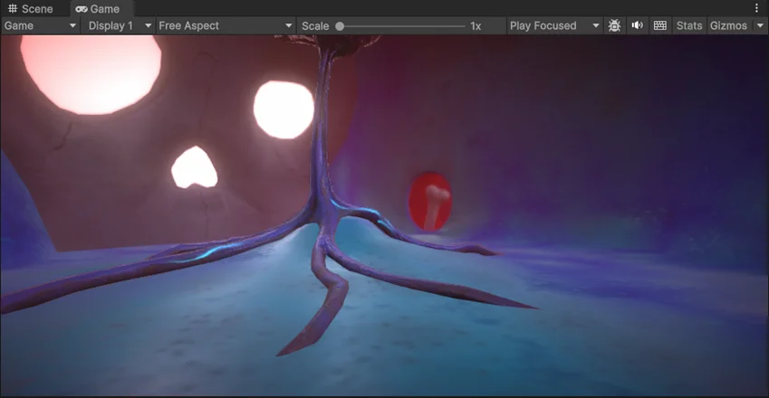
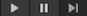
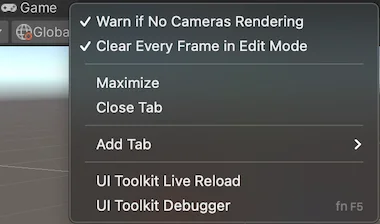

The Game view is rendered from the CamerasA component which creates an image of a particular viewpoint in your scene. The output is either drawn to the screen or captured as a texture. More info
See in Glossary in your application. The Game view displays how your final, built application looks. You need to use one or more Cameras to control what the player sees when they’re using your application.
The Game view is included in the default Unity Editor layout. If the Game view is not open, go to Window > General > Game to open the Game view.
In the Editor, you can toggle between the Game view and the Simulator view. The Simulator view displays how your built application looks on a mobile device.

Use Play mode to run your project and test how it works as it would in a built application.
Use the Play mode buttons in the ToolbarA row of buttons and basic controls at the top of the Unity Editor that allows you to interact with the Editor in various ways (e.g. scaling, translation). More info
See in Glossary to control the Play mode:
In Play mode, any changes you make are temporary and are reset when you exit Play mode. When you enter the Play mode, the Editor darkens parts of the interface outside the Game view.
Use the Simulator view to preview how your built application looks on a mobile device.
To change between Game and Simulator views, in the Game/Simulator tab, select an option from the Game/Simulator menu.
Alternatively, to open the Simulator view, go to Window > General and select Device Simulator. If there are no instances of the Simulator view open, it opens as a floating window. However, if the Simulator view is already open in the Editor, then trying to open the Simulator view from the menu brings it into focus
The Game view control bar is at the top of the Game view and contains options to control the Game view.
| Property | Description |
|---|---|
| Game/Simulator | Select the Game or Simulator view. Use the Game view to preview how your final, built application looks. Use the Simulator view to preview how your built application looks on a mobile device. |
| Display | Select a display to render in the Game view. If you have multiple GameObjects with camera components in the Scene, select an option to switch between them. By default, Display is set to Display 1. You can assign displays to cameras in the Camera component inspector, under Target Display. |
| Scale slider | Increase or decrease the scale of the Game view. Scroll right to zoom in and examine areas of the Game view in more detail. This slider lets you zoom out to display the entire screen where the device resolution is higher than the Game view window size. You can also use the scroll wheel and middle mouse button to do this while the application is stopped or paused. |
| Open the Frame Debugger | Open the Frame Debugger window. |
| Mute audio | Disable in-application audio when you enter Play mode. |
| Unity Shortcuts | Disable Editor keyboard shortcuts from triggering during Play mode when the Game view window is in focus. Shortcuts still trigger when the focus is any other part of the Editor. |
| Stats | Display or hide the Statistics overlay, which contains Rendering Statistics about your application’s audio and graphics. Use the Statistics overlay to monitor the performance of your application in Play mode. |
| GizmosA graphic overlay associated with a GameObject in a Scene, and displayed in the Scene View. Built-in scene tools such as the move tool are Gizmos, and you can create custom Gizmos using textures or scripting. Some Gizmos are only drawn when the GameObject is selected, while other Gizmos are drawn by the Editor regardless of which GameObjects are selected. More info See in Glossary |
Display or hide the Gizmos menu. Use the Gizmos menu to select Gizmos to hide or display in the Play mode. |
Test how your game looks on monitors with different aspect ratios. By default, Aspect ratioThe relationship of an image’s proportional dimensions, such as its width and height.
See in Glossary is set to Free Aspect.
| Property | Description |
|---|---|
| Low Resolution Aspect Ratios | Emulate the pixel density of lower-resolution displays and reduce the resolution of the Game view when an aspect ratio is selected. Low Resolution Aspect Ratios is always enabled when the Game view is on a non-Retina display. |
| VSync (Game view only) | Allow syncing. Syncing can be useful when you record a video, for example. The Editor attempts to render the Game view at the refresh rate of the monitor, though this is not guaranteed. When this option is enabled, it can still be useful to maximize the Game view in Play mode to hide other views and reduce the number of views that the Editor renders. |
This section describes the Play mode behavior based on your selection below.
You cannot change these properties while you’re in Play mode. You must pause or stop Play mode to change these settings.
| Property | Description |
|---|---|
| Play Focused | Shift the focus on the selected Game view when the Editor is in Play mode. Only one Game view can be in focus when you enter the Play mode. Using Maximized mode implies focus on the Maximized Game view. Enable Focused on a Game view to disable it on other Game views. |
| Play Maximized | Run Play mode with the Game view maximized to 100% of the Editor window. Even if you enable Play Maximized, when you pause Play mode, the Game view returns to the window state it was in before you entered Play mode. This means that the Game view stays maximized when you pause Play mode only if it was maximized before you entered Play mode. |
| Play Unfocused | Do not shift the focus to the selected Game view when you enter Play mode. |
The Gizmos menu contains options for how Unity displays gizmos for GameObjects and other items in the Scene view and Game view. This menu is available in both the Scene view and the Game view. For more information, refer to Gizmos Menu.
Right-click the Game tab to display advanced Game view options.

Advanced Game view options contain: